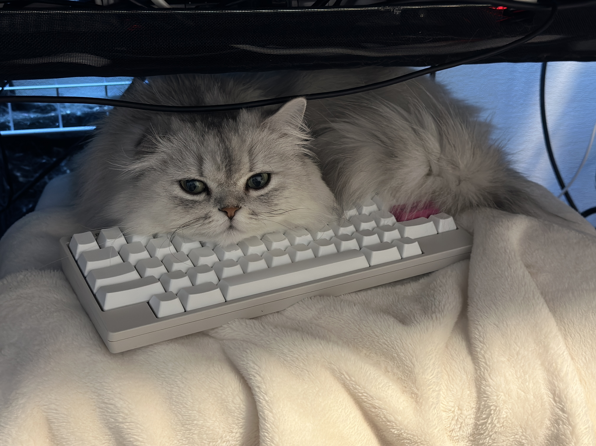

2023
2023年，电脑换了好几次，我甚至已经找不到自己的博客的本地存档。距离上次更新6年过去了，我来东京快5年了，没想到域名和页面都还基本完好。这期间我在日本只搬家了一次，各种意义上我确实蛮稳定的，我几乎没有觉得自己这五年有什么长进，心态和技术上也是。哦对了身体变得需要定期去医院检查了（笑。
修复
想到换电脑前有把东西全部备份到 Google Drive 上，于是下载下来 Hexo 的 local repo，重新编译并上传，发现 disqus 消失了，版面图的 full-image 编译不了，bilibili 的链接还是用的 flash 的，于是花了一点时间把改修的东西修了一下。对了，2023年有了 ChatGPT，修复这种杂活，像我这样的技术弱鸡，非常不要脸的盘问 ChatGPT 老师帮我解决一系列的问题。
Theme
主题还是使用 https://github.com/Siricee/hexo-theme-Chic , 虽然作者本人好像已经不用了，但是我还是挺喜欢这套风格的（其实就是懒得去看别的主题）。以前是直接作为 git submodule 放到自己的 blog repo 下面的，但是后来发现其实这样我对这个主题的修改的代码统统都不会在我的 blog repo 里面记录，删掉 .git 直接作为普通文件的话又没有办法从原作者那边拉取更新了。所以这次 fork 了一个，然后建了一个新的 branch 来专门记录修改，master branch 增加 remote 到原 repo 来拉去更新（虽然其实估计不会有什么大更新了）。这样每次修改主题需要分别在主题目录下和博客目录下提交一次，从博客的 repo 的 commit 也可以链接到主题的 repo 的commit。
Disqus
Full-image
- https://github.com/kdplus/hexo-theme-Chic/commit/69e65f0c2d903160a8cc64cb849d6a73869ab45c
这个 tag 好像我以前是从 next 主题那边搬过来用的，能让图看着突出一点。
笨如我还问 ChatGPT 这个 +desktop() 是做什么的，至少 ChatGPT 不会嫌我烦，挺好的。不知道从什么版本的 Hexo 开始的，现在1
2
3
4
5
6
7
8
9
10
11.full-image.full-image.full-image {
border: none;
max-width: 100%;
width: auto;
margin: 20px auto;
+desktop() {
max-width: none;
width: 126%;
margin: 0 -13%;
}
}hexo new post title会生成一个同名的文件夹，可以把图片放进去分开管理，挺好。
iframe
修好了
想和我的猫去远方
